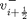
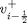
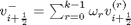
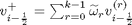
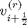
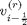
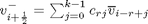
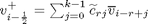

Contents
%function u_next = WENO5(f,x,u)
Weighted Essentially Non-Oscilatory for 5th order Accuracy
WENO 5 implementation subroutine for computing numerical fluxes at the right and left boundaries of the every cell, that is  and % . To solve for a 1D scalar advection equation.
This algorithm based on lectures notes of:
Chi-Wang Shu; High-Order ENO and WENO schemes for Computational Fluid Dynamics, High-Order Methods for Computational Physics. Springer 1999.
The basic idea is the following: instead of using only one of ENO stencils to form a reconstruction, one uses a convex combination of all of them as:
For the right boundary: 
For the left boundary: 
if lx == lenfth(u) error('the grid and data do not have the same length'); end
Undefined function or variable 'lx'. Error in ==> WENO5 at 24 if lx == lenfth(u)
Parameters
k = 3; % Polinomial degree
Constants
epsilon = 1e-6; % to avoid any alpha's denominator to become zero.
Compute the weights:
for i = 1:lx end switch k case{1} % When k = 1; for 2nd order WENO d = 1; w = 1; % not sure yet case{2} % When k = 2; for 3rd order WENO % Smooth Indicators: beta(1) = (v(i+1)-v(i))^2; beta(2) = (v(i)-v(i-1))^2; % dr contanst d = [2/3 1/3]; % Smooth coeficients: alpha(1) = d(1)/(epsilon + beta(1)); alpha(2) = d(2)/(epsilon + beta(2)); % Weights w(1) = alpha(1)/(sum(alpha)); w(2) = alpha(2)/(sum(alpha)); case{3} % When k = 3; for 5th order WENO % Smooth Indicators: beta(1) = 13/12*(v(i)-2*v(i+1)+vi(i+2))^2 + ... 1/4*(3*v(i)-4*v(i+1)+v(i+2))^2; beta(2) = 13/12*(v(i-1)-2*v(i)+vi(i+1))^2 + ... 1/4*(3*v(i)-4*v(i+1)+v(i+2))^2; beta(3) = 13/12*(v(i-1)-2*v(i-1)+vi(i))^2 + ... 1/4*(3*v(i)-4*v(i+1)+v(i+2))^2; % dr contanst d = [3/10 3/5 1/10]; % Smooth coeficients: alpha(1) = d(1)/(epsilon + beta(1)); alpha(2) = d(2)/(epsilon + beta(2)); alpha(3) = d(3)/(epsilon + beta(3)); % Weights w(1) = alpha(1)/(sum(alpha)); w(2) = alpha(2)/(sum(alpha)); w(3) = alpha(3)/(sum(alpha)); otherwise error('only options: 1, 2 and 3'); end r = [-1 0 1 2]; j = [ 1 2]; c_rj = [11/6 -7/6 1/3; 1/3 5/6 -1/6; -1/6 5/6 1/3; 1/3 -7/6 11/6];
Reconstruction:
Following the formulation of reconstuction polinomials for Right and Left side; that is  and 
Polinomials are defined as:  and 
% k = 1 % k = 2 % k = 3 % right vr(i) = c_rj(1,1)*v() + c_rj(1,2)*v() + c_rj(1,3)*v() % left